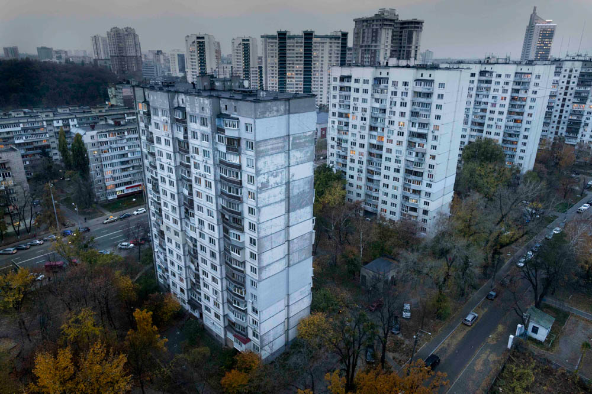

Sergey

I come from a poor family in the Ukraine, and have faced many struggles in my life. But despite these challenges, I have always tried to stay positive and keep moving forward.
Growing up, my family didn't have much. We lived in a small apartment in a run-down building in a working-class neighborhood.
My parents worked hard to provide for us, but it was never enough. I learned to be resourceful and make the most of what we had.

I wasn't sure what to do with my life. I couldn't afford to go to college, so I took odd jobs here and there to make ends meet. It wasn't until I discovered my passion for woodworking that I found my calling. I started my own small business, building furniture and other items out of wood. It was hard work, but I loved it. Over the years, my business grew and I was able to support myself and my family.
Sophia
I am a young artist living in Berlin, Germany. I grew up in a small town in the north of the country, but I always knew that I wanted to live in a big city where I could pursue my passion for art. After finishing high school, I moved to Berlin to study art at a local university. It was a scary and exciting time in my life, but I was determined to make it work. I found a small apartment in a trendy neighborhood and set to work on my art. Over the years, I have experimented with different mediums and styles, but I always come back to painting. There's something about the way the colors mix and blend on the canvas that speaks to me. I love the way that art can express emotions and ideas in ways that words cannot.